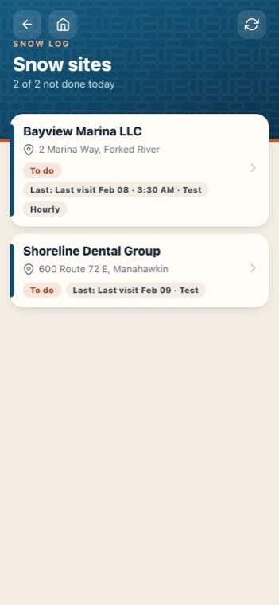
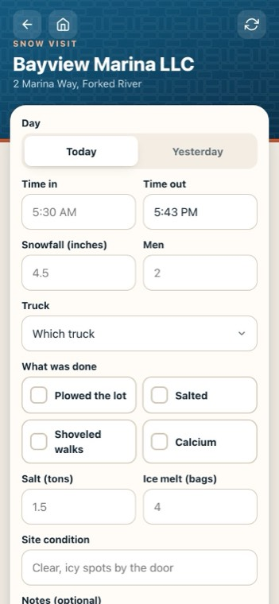
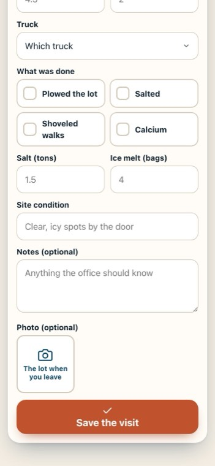
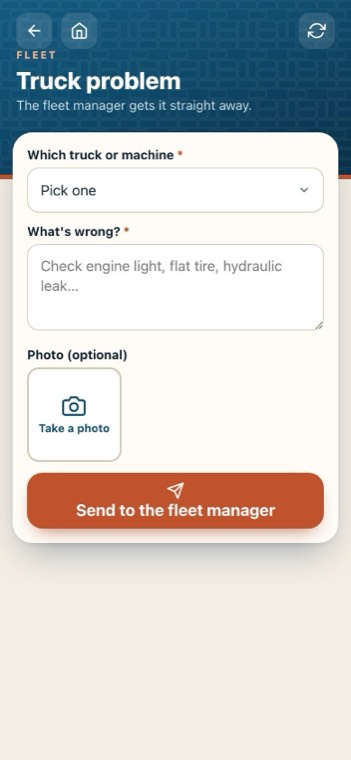
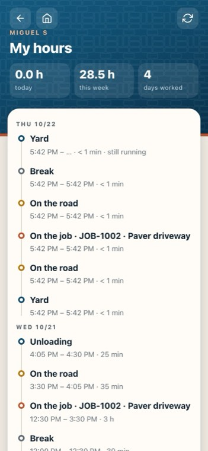

Snow log, truck problems and my hours
On the crew phone app: Jersey Shore Pavers — Crew.
-

1Snow sites
Every snow site, the ones not done today first. Anyone signed in can log one.
-
 2
2Times
Time in and time out, like five thirty A.M.
-

3What was done
Plowed, salted, shoveled walks, calcium: tap each one.
-

4Save the visit
The office can bill it straight away.
-

5A truck problem
Pick the truck or machine, say what's wrong, add a photo: the fleet manager gets it straight away.
-

6My hours
Today, this week and the days worked, with the day as a timeline: yard, road, job and breaks.